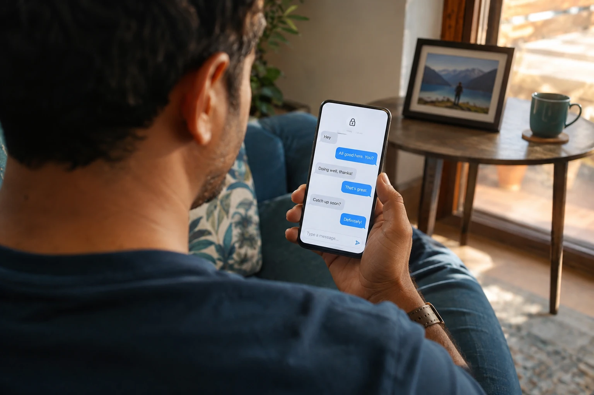

Robin Kay
Mutual followers · Personal conversation
A little space for conversation.
Write the first message below.
AssentTag
Make time for a conversation. Choose how long your messages stay.
Mutual followers · Personal conversation
A little space for conversation.
Write the first message below.